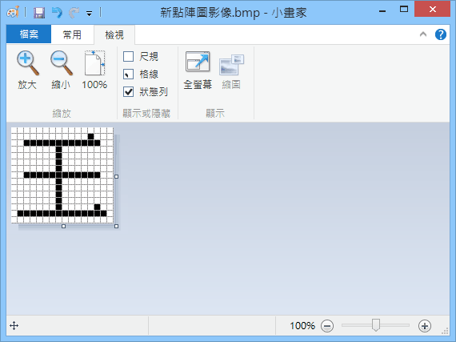

利用修改打造心裡想要的球隊
《スーパーファミスタ 5》是日本野球遊戲少數可以任意自創球員的，能夠打造出心目中最理想的球隊進行遊戲。
名字方面可用畫的，想把字畫得漂亮，可先用小畫家打出字型大小 11 的細明體字，放大 8 倍後就能一邊對照小畫家一邊把字畫上去。

細明體、11、800%、顯示格線
可修改的姿勢也算豐富，按自己喜好把球員的姿勢改一改，會增加更多趣味性。但球隊的球衣如果有線條就不適合改，因為很多屬於獨特姿勢，遊戲並未針對每個球隊畫這些姿勢，使得圖像會有殘缺。
自創球員有人數限制，因此要修改的對象若是內建球員，可以直接到 ROM 裡面去改，節省自創名額。
修改技巧
打擊者的資料結構
首先，建議用選手的「點、走、守、肩」數據順序，來尋找打擊者，然後照如下格式修改資料（以松井秀喜為例）：
０Ａ ０２ ００ ００ ００ ０Ｄ ００ ００ ０１ ２Ｄ ０１ １４ ３Ｃ
チーム 打順 不明 姿勢 投打 率 本 点
０Ｆ ０Ｆ １９ ０１ ０７ ００ ０７
走 守 肩 背番 人気 球棒顏色 守備
投手的資料結構
首先，建議用選手的「最速、中速、右、左、下」數據順序，來尋找投手，然後照如下格式修改資料（以伊良部為例）：
００ ＦＤ ００ １３ ９Ｃ ８４ ０８ ０６ ０８
投 防 スタミナ 最速 中速 右 左 下
「投」指投球姿勢。遊戲的修改模式只能選「上」「橫」兩種，必須自行用記憶體修改程式，改成其它姿勢的數據。
修改數據
打擊姿勢
00 標準打法
01 鈴木一朗打法
02 王貞治打法
03 美式打法
投球姿勢
00 右手標準投法
08 右手村田兆治投法
10 右手野茂英雄投法
20 右手下勾投法
40 右手側投法
80 左手標準投法
88 左手村田兆治投法
90 左手野茂英雄投法
A0 左手下勾投法
C0 左手側投法
球棒顏色
00 木棒
01 紅色
02 藍色
03 黑色
04 金色
05 灰色
06 綠色
07 紫色
守備位置
1 投手
2 捕手
3 一壘手
4 二壘手
5 三壘手
6 游擊手
7 左外野手
8 中外野手
9 右外野手
DH 指定打擊